Le mur
La grande salle et ses poutres, la salle du haut, les plats et le jeu de la grenouille. Au milieu, une gravure de 1563 : déjà, on mangeait bien en Flandre.
-

La grande salle, sous les poutres -
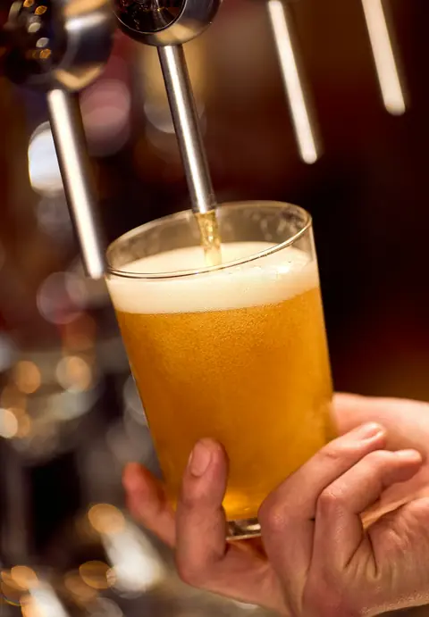
La blonde de la maison, tirée au comptoir -
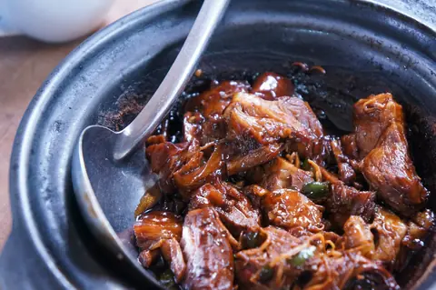
La carbonade, après quatre heures au four -
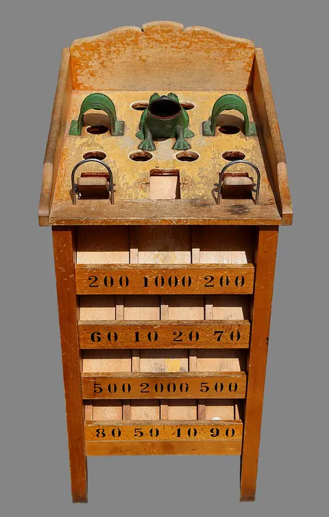
Le jeu de la grenouille, près du poêle -

L’assiette du Nord, pour goûter un peu de tout -
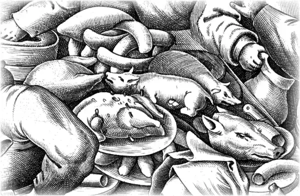
Au mur : « La Cuisine grasse », d’après Bruegel, 1563 -
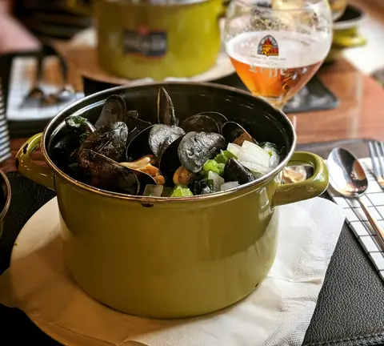
Les moules, de septembre à mars -
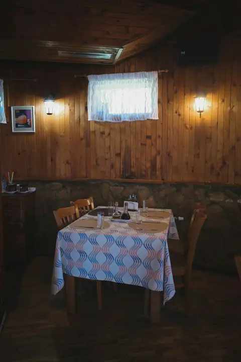
La salle du haut, pour les groupes -
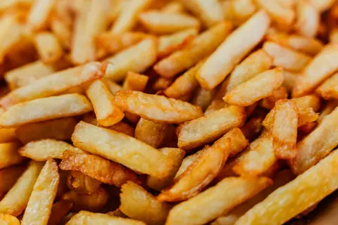
Les frites, coupées le matin -
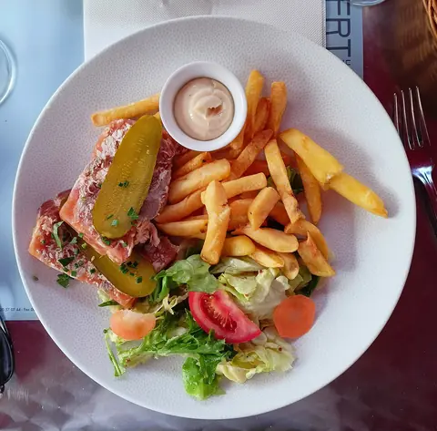
Le potjevleesch, préparé la veille -
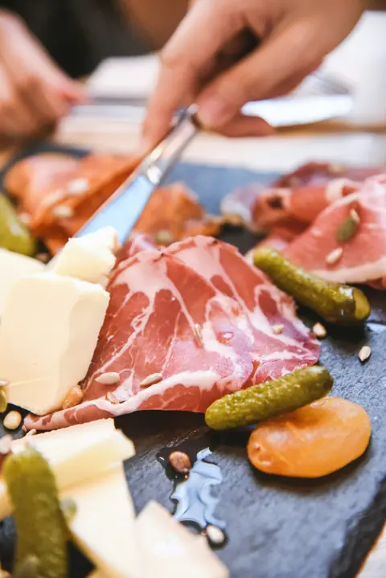
La planche à partager -
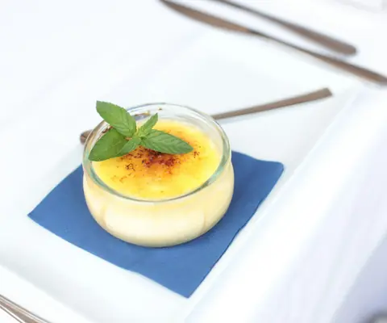
Crème brûlée à la chicorée -
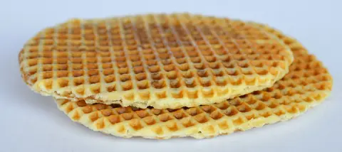
Les gaufres fourrées, à la vergeoise -
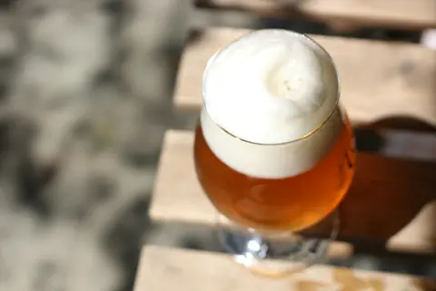
La première gorgée, en terrasse -
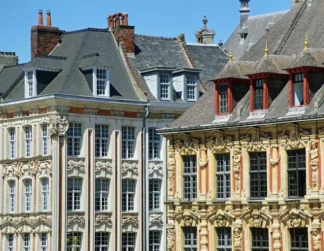
À cinq minutes à pied : la Vieille Bourse -
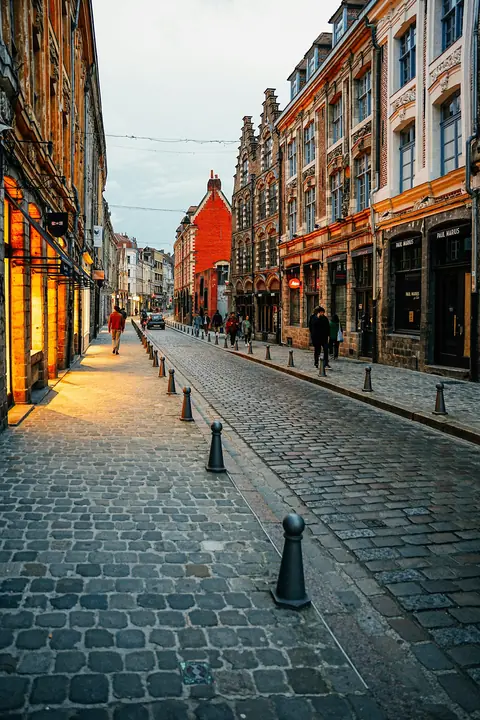
Le Vieux-Lille, un soir de novembre


D’où viennent les images
’t Kanneke n’existe pas : les photos montrent d’autres lieux et d’autres assiettes, choisies pour leur ressemblance. Aucune n’a été prise ici.
- Gravures : Pieter van der Heyden d’après Pieter Bruegel l’Ancien, La Cuisine grasse, 1563, The Metropolitan Museum of Art, domaine public (CC0). Détails recadrés, à l’encre sur la carte et à la craie sur l’ardoise.
- Houblon : planche de Köhler’s Medizinal-Pflanzen, 1887, domaine public. Détourée.
- Photos Unsplash (licence Unsplash) : Tim Raderschad (grande salle), Vanessa Zhu (salle du haut), Wenceslao Moya grondona de luca (bière tirée), yvonne lee harijanto (carbonade), Durenne Loris (frites), Alana Harris (moules), You Le (moules-frites), Luna Wang (planche), Tommaso Ubezio (crème brûlée), monica di loxley (bière), Martti Salmi (Vieille Bourse), Denis Ivanov (rue du Vieux-Lille).
- Photos Wikimedia Commons : Ji-Elle, assiette du Nord et welsh, CC BY-SA 4.0, recadrée ; Jamain, jeu de la grenouille, CC BY-SA 3.0 ; Renhour48, potjevleesch (CC0) ; DimiTalen, gaufres fourrées (CC0).